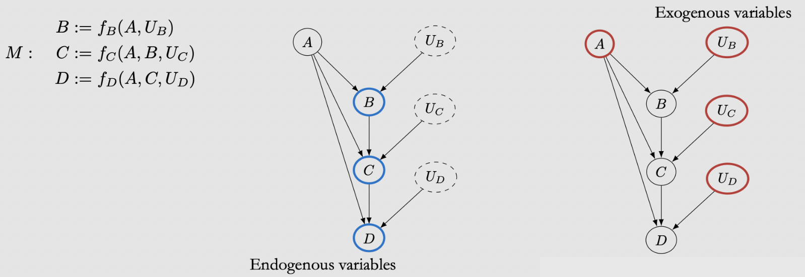

基础
Contents
基础¶
定义：Inferring the effects of any treatment/policy/intervention/etc
因果阶梯：
Association \(P(y \mid x)\)
How seeing Y change my belief in Y? 比如看到某个症状代表有疾病吗
Intervention \(P(y \mid d o(x), z)\)
What if I do X，比如如果禁止香烟会如何
Counterfactuals \(P\left(y_{x} \mid x^{\prime}, y^{\prime}\right)\)
What if I had acted differently? 是阿斯匹林让我的头痛停止的吗？
核心：
在给定的假设和模型框架下:
将因果关系从关联中分割(identification)
计算因果关系的大小 (estimation)
Motivation¶
辛普森悖论 Simpson’s Paradox¶
定义：总体的规律跟分组的规律不同：几组不同的数据中均存在一种趋势, 但当这些数据组合在一起后, 这种趋势消失或反转。
简单说就是总体看好 但分层看不好
产生的原因：人群分布在混淆变量上不一致，导致相关关系完全可以被扭曲（confounding bias）
统计层面的核心：Partial correlation and marginal correlation can be dramatically different
解决的方式：取决于因果图 forks的话就要分层，collider的话就不要分层
例子：
[例1]: 男性用药多 但恢复率更高，所以让整体有这个correlation，不过by group的correlation不是这样！

[例2]: 比如说Y是购买概率，X是看直播时长，有可能实际上 男生女生都是看得越久 购买的概率越低，但由于普遍女生看的久，购买概率高，在整体数据上会体现出“观看直播时间越长，购买概率越高”的错误结论！
[例3]: 给1500个人Treatment A 550个人B，看致死率，但本身有轻重症之分
现象：Subgroup之后结论是B更好、total的时候是A更好
造成的原因是unequal weighting：重症的人得到了更多的B导致B看起来不好了⇒总体的结论是一个有偏的加权平均
Treatment A的致死率计算里，轻症的致死率权重大，所以致死率小
Treatment B的致死率计算里，重症的致死率权重大，所以致死率大
正确的解释：Either treatment A or treatment B could be the right answer, depending on the causal structure of the data!
情景1: condition is a cause of the treatment


解释：比如医生把B专门用在重症，轻症的给A就可以。
选择：这种情况要选B（看sub-group的结论），因为我们B中的高致死率，只是因为他们本身就有很高的致死率被assign了更多的重症！
情景2: treatment is a cause of the condition

解释：比如如果Treatment B，必须要等很久才能take，所以在等的时候condition会worsen——变成了重症！从而导致了更多的重症被接受了Treatment B
Treatment A不用等所以马上就轻症了！这就是为什么A的轻症占比更高
选择：这种情况要选A（看total的结论），因为Treatment本身是造成worse condition的原因，从而导致了Y。所以我们需要考虑T对C的影响而不能直接看conditional的结论（因为T会让你去不同的C！）
考虑这个影响的办法就是直接看T对Y的总体效果。
结论：conclusion取决于causal structure
例4: 游戏胜率
看似胜率提升了，但其实每种比赛的胜率都下降了，只是最近本身胜率就高的匹配和大乱斗打的多了一点
例5: 风控场景
分析发现小额贷款比大型贷款更容易违约，直觉可能认为银行应停止发放小额贷款。
而真实情况可能是小企业失败率更高，也更可能申请小额贷款，因果关系
是：企业规模小（X2）->违约(Y)
而并非：贷款规模小（X1）—>违约（Y）
因此决策应受企业规模的影响，而非贷款规模。
Correlation Does Not Imply Causation¶
关联性本身是不可解释的（因为两者可能不存在物理意义上的关系）、同时关联性本身也是不稳定的，可能是selection bias（比如在大多数图片中，狗都在草地上，错误狗和草地的强相关就认不出沙滩上的狗了）。因此平时DA做的维度下钻虽然解释性高但是很可能是不科学的！
例子：Cor——穿着鞋睡觉的人更容易头疼｜Cau——喝酒醉倒⇒穿着鞋睡觉、喝酒⇒头痛
喝酒是common cause
问题1——穿鞋睡的人和不穿鞋睡的人，除了穿鞋这一点之外还有喝酒这个重要的区别，所以不是控制其他变量不变
问题2——是喝酒同时导致了穿鞋睡觉和头痛。我们观察到可能主要是一个confounding effect （而不主要是Causal association的direct path）
Total Association = mixture of causal and confounding association
correlation是一种线性的association，不过也会跟general的混称
例子：nested problem
比如搜索影响社交、社交影响内容消费、内容消费影响搜索
比如点赞影响流量、流量影响GMV、GMV影响流量、流量又影响点赞
例子：spillover
斗鱼直播影响虎牙
what does imply causation?¶
Inferring the effect of treatment/policy on some outcome的时候，怎样才能说明是causal呢？
方法1是控制实验: 如果你知道做了某件事的potential outcome就是work，不做就没有，那就可以

问题：It is impossible to observe all potential outcomes for a given individual. —— CI的根本问题！
作为一个个人，如果你吃了药（吃药是factual），那你就不能知道你不吃药（不吃药是counterfactual）的outcome会是什么样了。
如果上升到群体然后平均的话，不是完全相等的！
Individual treatment effect (ITE): \(Y_{i}(1)-Y_{i}(0)\)
Average treatment effect (ATE): $\( \begin{aligned} \mathbb{E}\left[Y_{i}(1)-Y_{i}(0)\right] &=\mathbb{E}[Y(1)]-\mathbb{E}[Y(0)] \\ & \neq \mathbb{E}[Y \mid T=1]-\mathbb{E}[Y \mid T=0] \end{aligned} \)$
第二个不等号左边是causal quantity，右边是measure of correlation 是一个associational quantity
两者不想等的因为有confounding effect（T除了直接对Y，还会通过C去影响Y）
方法2是随机试验: Randomized Control Trails （RCTs）

如果说你的treatment可以跟condition没关系的话，比如Treatment就是随机抛硬币跟C无关，那么就没有confounding effect（T跟Y不会通过C去影响）
然而这个要求我们的分组是相同的，比如穿鞋睡和不穿鞋睡是抛硬币随机的 不管你清醒与否！这样的效果就是清醒和喝酒的人，在穿不穿鞋这件事情上的分布都是一样的。
方法3因果推断: 从历史数据进行observational studies
场景：Can’t always randomize treatment，比如given一些数据集
不道德｜Ethical reasons (e.g. unethical to randomize people to smoke for measuring effect on lung cancer)
不可行｜Infeasibility (e.g. can’t randomize countries into communist/capitalist systems to measure effect on GDP)
不可能｜Impossibility (e.g. can’t change a living person’s DNA at birth for measuring effect on breast cancer)
解决方案：adjust/control for confounders
因果推断的业务场景：¶
如果给圈选的某些用户推送这些内容，他们会更愿意来消费吗?
是否给社区活跃用户提供更多的内容，能进一步提升他们在社区消费?——这里需要解答的因果关系是是否用户越活跃、越喜欢探索，就会⇒消费？
比如：可能本来用户就是喜欢app⇒喜欢消费+喜欢在社区留言，不能简单把消费归因到内容给业务出结论。
快手直播
用户激励的设计：什么样的补贴策略能够培养新的直播观众?
评估推荐策略：给优质主播增加曝光, 是否能够促进用户 的长期直播观看和打赏 ?
产品功能迭代：在直播PK中进行产品功能的改进, 是否能 够带动整体直播打赏的提升?
预估产品和方向的长期价值：改变产品框架, 是否能够增进用户的直播 消费习惯与平台整体长期收入的提升？
因果推断有两个基本的框架，侧重点不同 Pearl的Structural Causal Model - 结构因果模型
特点：利于因果图的方式展现、推导变量之间的关系
缺点：变量数量多、关系复杂的时候，构建SCM的成本很高
比如年龄、收入、还有用app的习惯等等
优点：SCM可以更好描述变量关系、结果的置信度跟高
Rubin的Potential Outcome Framework - 潜在结果模型
特点：因果关系被淡化，关汢变量因果效应的评估
缺点：没有系统论证变量是否存在因果关系
优点：变量复杂、数据庞大的时候，效应评估变得可行——POF降低变量带来的分析复杂 度，用准确率换取计算可行性
Potential Outcomes (Rubin)框架¶
Rubin的Framework强调使用counterfactual来寻找合适的对照组，潜在结果等于是创造了一个平行世界，又或者称为反事实事件。
因果有两个派系：
以Donald Rubin为代表的Potential Outcome（PO ）——在经济学和社会科学中有大量的应用实例
以Judea Pearl为代表的Structural Causal Model(SCM) , 以DAG表示因果关系——深受计算机学者喜爱
上面提到的 无法观测what would have been if I也可以理解为一种缺失值处理问题：
因为individual只能有Y(treatment给1)或者Y(treatment给0)中的一个
Potential outcome model （虚拟事实模型），也叫做Rubin Causal Model（RCM），Rubin框架中常见的方法
Matching
DID
合成控制
**核心思想：**寻找合适的对照组
AB
匹配、双重差分、合成控制···
各种Effect¶
Average treatment effect(ATE)¶
解决个体无法观测的方法
ATE: \({E}[Y(1)-Y(0)]=\mathbb{E}[Y(1)]-\mathbb{E}[Y(0)]\)
association difference: \(\mathbb{E}[Y \mid T=1]-\mathbb{E}[Y \mid T=0]\)
而这两个概念是不同的——correlation不是causation：Treatment之后的subgroup可能不是在所有其他变量上comparable的：

什么时候可以呢？
Ignorability—— \((Y(1), Y(0)) \perp T\)
在用户特征，外界因素等条件一定的前提下，用户被干预与否是独立于他/她的潜在结果
\[\begin{split} \begin{aligned} \mathbb{E}[Y(1)]-\mathbb{E}[Y(0)] &=\mathbb{E}[Y(1) \mid T=1]-\mathbb{E}[Y(0) \mid T=0] \quad \text { (ignorability) } \\ &=\mathbb{E}[Y \mid T=1]-\mathbb{E}[Y \mid T=0] \end{aligned} \end{split}\]概率图的解释：因为confounding variable跟T无关，也就没有了confounding effect!

Exchangeability: 两组可以交换但期望不变，是上一个独立条件的另一种解释

Ignorability和Exchangeability假设在成立的的时候，能给我们identifiability of causal effect
identifiable: A causal quantity (e.g. \(\mathbb{E}[Y(t)])\) is identifiable if we can compute it from a purely statistical quantity (e.g. \(\mathbb{E}[Y \mid t]\) )
然而让他们成立，需要RCT来让被测完全随机地执行treatment：

结果：让最后的组完全comparable
概率图：
Average treatment effect on treated (ATT)¶
\(A T T=E\left[Y_{1}-Y_{0} \mid T=1\right]\)
比如我们有NBA广告投放后体育产品的消费量，被投放的群体中男：女=4:1
如果我们希望知道如果对全体用户（男：女调权为1:1） 广告的转化率提升 那就是ATE
如果希望知道对T=1用户（男：女=4:1）广告转化率，那就是ATT
Conditional average treatment effect (CATE):¶
\(\tau(x) \triangleq \mathbb{E}\left[Y_{i}(1)-Y_{i}(0) \mid X=x\right]\)
在不同条件下treatment所产生的条件平均效果，又被称作异质性的因果效应(Heterogeneous Treatment Effect, HTE)
\(A T E=E\left(\tau_{i}\right)=\frac{1}{n} \sum_{i=1}^{n}\left(y_{i}^{1}-y_{i}^{0}\right)\) 评估的是整体、是对样本的总量; 而CATE \(=E\left(\tau_{i} \mid x\right)=\frac{1}{n_{x}} \sum_{i=1}^{n_{x}}\left(y_{x, i}^{1}-y_{x, i}^{0}\right)\) 是对一个子集\(n_{x}\) 相当是根据x圈选了一部分的用户。
CATE业务中更常用:
就好比AB实验看结果，如果全局变量不显著，我们会考虑下钻看一下哪些特征的用户子群体的变量是显著的，因为我们更多的希望回答上线一个新功能对某一部分群体是否有明显的帮助（个性化推荐）
比如判断时长任务对”每周观看视频超过30分钟”的用户的影响
关心CATE通常是因为希望区分出对处理敏感的群体和不敏感的群体，从而对前者进行处理、避免对后者进行处理，从而节约资源、避免打扰
Heterogeneous Treatment Effects¶
给全app用户发了优惠券⇒下单GMV均值提升，不代表每个用户都需要发优惠券（存在人群异致性）
假设¶
Conditional exchangeability假设¶
Exchangeability和ignorability是一个事情的两面。
- 一个说实验组对照组交换（把treatment给对照组而实验组作为对照），那么他们的结果是相同的；
- 一个说对于其中观测到的缺失的反事实数据，我们可以直接忽略缺失，只计算有数据的部分。
很多时候假设exchangeable不可行，但我们可以control for relevant variables by conditioning:
在给定的条件下 treatment与潜在结果相独立，即 - 具有相同的条件变量X的两个个体，无论在哪种干预下，其潜在结果均应相同 - 具有相同的条件变量X的两个个体，他们的干预分配机制都相同
Conditional exchangeability (Unconfoundedness / conditional ignorability): \((Y(1), Y(0)) \perp T \mid X\)

含义：在相同的X level中就没有X的confounding了，因为X被控制了而同一个X中的treatment groups是comparable的。从而X确定时 T和Y就没有非causal的confounding effect了
存在的问题：这是一个untestable的assumption，因为可能有另一个unobserved的confounder W:
Conditional ATE:
第一行：linearity of expectation
第二行：conditional exchangeability因为X相同无confounding
第三行：得出的结果就是两个statistical quantities
从Conditional ATE也可以推到marginal effect:
Stable Unit Treatment Value Assumption(SUTVA)¶
样本之间具有独立性，个体只受到单一干预（treatment），个体的潜在结果只与自身有关。
无干扰
对象间互相不会干扰No Interference:
My outcome is unaffected by anyone else’s treatment. Rather, my outcome is only a function of my own treatment.
\[Y_{i}\left(t_{1}, \ldots, t_{i-1}, t_{i}, t_{i+1}, \ldots, t_{n}\right)=Y_{i}\left(t_{i}\right)\]
某一个对象被干预, 不会影响其它对象的目标结果
只有一种干预措施
Positivity假设¶
每个个体都可能命中任意一种干预For all values of covariates X present in the population of interest: \(0<P(T=1 \mid X=x)<1\)
这个保证了上面的式子不会遇到除0的问题，具体可以见课本P12
Intuition: 如果总体中有一个x都没有接收到treatment，我们不知道他们如果接受treatment的话会怎么样. Population中的样本用户都有一定的几率会被干预（不会被遗忘）!
Overlap 另一个解读Positivity的视角：
overlapof \(P(X \mid T=0) \quad\) and \(\quad P(X \mid T=1)\)我们希望covariate distribution of the treatment group to overlap with the covariate distribution of the control group!

所以overlap也叫common support
Positivity-Unconfoundedness Tradeoff
这里Positivity和unconfoundedness是一个tradeoff，如果我们增加变量，那么subgroup就会变小，虽然更容易解决confound，但是会让一些group整个T/not T的概率增高（比如subgroup的size缩小到只有1）
Extrapolation
违反Positivity的后果是影响模型的表现，因为通常causal effect需要根据(t, x, y)的样本拟合\(\mathbb{E}[Y \mid t, x]\)
注意 在实际操作中获得\(\mathbb{E}[Y \mid T=1, x]\)的方法是用任何一个minimize MSE的model就可以（比如Linear Regression）
Consistency假设¶
某一个对象的潜在结果等于其观测结果——The outcome we observe Y is actually the potential outcome under the observed treatment.
因为ATE评估的时候我们看不到反事实！
If the treatment is \(T\), then the observed outcome \(Y\) is the potential outcome under treatment \(T\). Formally,
We could write this equivalently as \(Y=Y(T)\)
总结¶
之前的conditional ATE⇒marginal ATE其实依赖了以上的四个假设

no interference: 保证我们只用关注\(\mathbb{E}[Y(1)-Y(0)]\)来衡量causal effect
unconfoundedness: 保证了T能加在X上面
positivity：保证了每个X都有T所以能evaluate
consistency：保证T了之后的Y就是我们想要的
Pearl - flow of Association and Causation Graphs¶
Pearl的Framework强调的是对因果图的使用，模型由有向图DAG和观测数据构成
开发了do-算子来推测政策干预后的新的分布，可以计算更复杂的关系图中的因果
Pearl的重点在identification（Rubin在estimation和inference），两者互补
Causal Graphs¶
cause: \(A\) variable \(X\) is said to be a cause of a variable \(Y\) if \(Y\) can change in response to changes in \(X\)Strict Causal Edges Assumption: In a directed graph, every parent is a direct cause of all its children.2 main assumptions that we need for our causal graphical models:

Two-Node Graphs and Graphical Building Blocks¶
Building blocks:
Chains/Forks: 有common cause 所以X1和X3也是association，只要common cause改变两个会联动改变，所以有association flow然而如果conditional on X2的话相当于block了这个path：
通过Bayes network factorization和Bayes Rule证明可以得到：\(P\left(x_{1}, x_{3} \mid x_{2}\right) =\frac{P\left(x_{1}, x_{2}\right)}{P\left(x_{2}\right)} P\left(x_{3} \mid x_{2}\right)\)
Forks例子：
游戏内容消费⇒游戏登陆时长❌：因为可能X2是对游戏的兴趣
Colider例子：
用户看视频的量 跟 收入水平没关系，但是可能 用户对游戏内容的消费会带来游戏内的活跃、高的收入水平也会带来游戏内的活跃，所以对一个固定的游戏活跃程度（比如20～25级），消费量 和 收入水平 的相关关系就会被打通 形成一个虚假的关联
Immorality: 两个没connect的parents有一个共同的child这个child不允许association flow through it而是直接blcok了，管它叫
collider这个图中本身\(P\left(x_{1}, x_{3}\right) = P(x_{1})P(x_{3})\)
但当我们conditional on X2之后就会unblock这个path！
例子：


这个其实就是selection bias！
d-separation¶
d- separation的作用是用于确定T和Y之间相互独立的话，需要控制哪些变量。比如如果\(Z\) 阻断了 \(T\) 到 \(Y\) 的所有路径，那么 称 \(Z \mathrm{~d}\) 分离了\(T\) 和 \(Y\) ，记为 \((T \perp Y \mid Z)_{G}\)
Blocked path: A path between nodes \(X\) and \(Y\) is blocked by a (potentially empty) conditioning set \(\mathrm{Z}\) if either of the following is true:
Along the path, there is a chain \(\cdots \rightarrow W \rightarrow \cdots\) or a fork \(\cdots \leftarrow W \rightarrow \cdots\) where \(W\) is conditioned on \((W \in Z)\).
There is a collider \(W\) on the path that is not conditioned on \((W \notin Z)\) and none of its descendants are conditioned on \((\operatorname{do}(W) \nsubseteq Z Z)\).
Unblocked path: a path that is not blocked
d-seperation: Two (sets of) nodes \(\mathrm{X}\) and \(\mathrm{Y}\) are d-separated by a set of nodes \(\mathrm{Z}\) if all of the paths between (any node in) \(X\) and (any node in) \(Y\) are blocked by \(Z\).
Global Markov Assumption: Given that \(P\) is Markov with respect to \(G\) (satisfies the local Markov assumption), if \(X\) and \(Y\) are \(d\)-separated in \(G\) conditioned on \(Z\), then \(X\) and \(Y\) are independent in \(P\) conditioned on \(Z\). We can write this succinctly as follows:\[ X \perp_{G} Y\left|Z \Longrightarrow X \perp_{P} Y\right| Z \]会得到conditional indolence
总结：
association flows along chains and forks, unless a node is conditioned on
a collider blocks the flow of association, unless it is conditioned on
Flow of Association and Causation¶
d-separation Implies Association is Causation!

原因：通过这个我们确保non-causal association不会flow，剩下的就只有causation了
记得：association is not causation！
总结¶
Causal association flows from 푇 to 푌 along directed paths
Non-causal association flows along any other paths from \(T\) to \(Y\) that aren’t blocked by either
a non-collider that is conditioned on or
a collider that isn’t conditioned on
Causal Models¶
我们需要Causal Model来将因果被估量，变成统计被估量

The \(do\)-operator¶
用do来表示intervention:
Conditioning只是restrict to subset of data, 而intervene是对整体数据问what would be like if XXX

do(T=1)是把本来有偏的分布调回了原始所有数据的分布（通过前门、后门准则和do-calculus三种方法）
ATE从而可以写成：\(\mathbb{E}[Y \mid d o(T=1)]-\mathbb{E}[Y \mid d o(T=0)]\)
可以观测到的：\(P(Y, T, X)\)、\(P(Y \mid T=t)\)
没有do所以可以直接observe data from them without needing to carry out any experiment
Interventional的：\(P(Y \mid d o(T=t))\)、\(P(Y \mid d o(T=t), X=x)\)
Condition on do的含义：everything in that expression is in the post-intervention world where the intervention do(t) occurs
Indentification就是要把Interventional的变成observational的 （remove do!)，但是不一直能work
Main assumption: modularity¶
Causal Mechanism: causal mechanism that generates \(X_{i}\) is all of \(X_{i}\) ‘s parents and their edges that go into \(X_{i}\)Modularity / Independent Mechanisms / Invariance: If we intervene on a set of nodes \(S \subseteq[n]\)(\(\{1,2, \ldots, n\}\)) setting them to constants, then for all \(i\), we have the following:If \(i \notin S\), then \(P\left(x_{i} \mid \mathrm{pa}_{i}\right)\) remains unchanged.
If \(i \in S\), then \(P\left(x_{i} \mid \mathrm{pa}_{i}\right)=1\) if \(x_{i}\) is the value that \(X_{i}\) was set to by the intervention; otherwise
Intuition: If we intervene on a node \(\mathrm{X}_{\mathrm{i}}\), then only the mechanism \(P\left(x_{i} \mid \mathrm{pa}_{i}\right)\) changes. All other mechanisms \(P\left(x_{j} \mid \mathrm{pa}_{j}\right)\) where \(i \neq j\) remain unchanged
In other words, the causal mechanisms are modular.
用途：Truncated Factorization
\( P\left(x_{1}, \ldots, x_{n} \mid d o(S=s)\right)=\prod_{i \notin S} P\left(x_{i} \mid \mathrm{pa}_{i}\right) \)
Otherwise, \(P\left(x_{1}, \ldots, x_{n} \mid d o(S=s)\right)=0\)
The latter’s Business is only over \(i \notin S\) rather than all \(i\).
Backdoor adjustment¶
Condition相当于把所有的X展开，然后乘它的概率做权重累加就相当于切开了！
Backdoor path: nondirected unblocked paths from Tto Y如果block掉backdoor path的话就可以identify causal quantities 比如\(P(Y \mid d o(t))\)
Intuition：Block掉它之后就可以从observational data中模拟intervene的效果
Backdoor criterion: A set of variables \(W\) satisfies the backdoor criterion relative to \(T\) and \(Y\) if the following are true:\(W\) blocks all backdoor paths from \(T\) to \(Y\).
\(W\) does not contain any descendants of \(T\).
因果关系识别的两种准则——后门准则(backdoor criterion)、前门准则(frontdoor criterion)
Backdoor adjustment: Given the modularity assumption, that W satisfies the backdoor criterion, and positivity, we can identify the causal effect of \(T\) on \(Y\):\[P(y \mid d o(t))=\sum_{w} P(y \mid t, w) P(w)\]
Structural causal models¶
在causal的世界等号是asymmetric的：\(B:=f(A, U)\)
Structural Causal Model (SCM): a tuple of the following sets:
A set of endogenous variables \(V\)
A set of exogenous variables \(U\)
A set of functions \(f\), one to generate each endogenous variable as a function of other variables
endogenous variables: variables that we write structural equations for, variables that have parents in the causal graphexogenous variables: variables who do not have any parents in the causal graph Interventions in SCM: replacing the structural equation for \(T\) with \(T:=t\)
Rule: don’t adjust post-treatment covariate
identification¶
把没办法估计的causal quantity变成可以得到的
Randomized Experiments¶
随机试验Magic的地方在于：No unobserved confounding
Comparability / covariate balance
实验组和对照组在其他变量上都是comparable被控制了的，只有T不同，所以区别肯定只是T导致的，从而确保了covariate balance: distribution of covariates \(X\) is the same across treatment groups:
$\(
P(X \mid T=1) \stackrel{d}{=} P(X \mid T=0)\stackrel{d}{=} P(X)
\)$
原因：T和X不相关
而我们又可以证明Covariate balance implies association is causation——\(P(y \mid d o(t))=P(y \mid t)\)：
Frontdoor adjustment¶
Backdoor是block backdoor path从而得到identification
场景：有的时候混杂因子是unobserved的，无法block掉backdoor path
例子：吸烟的基因不可获得所以不能后门调整
解决方案：找到T到Y之间的一个M，把T到Y变成T到M+M到Y
还是上面的例子：
首先, \(X\) 对 \(Z\) 的因果效应是直接可以通过数据得到的: $\( P(Z=z \mid d o(X=x))=P(Z=z \mid X=x) \)$
接下来, \(Z\) 对 \(Y\) 的因果效应, 两者存在一个共因 \(U\), 因此存在混杂, 可以用后门路径调整, 但由于 \(U\) 是末观测的变量, 所以我们对 \(X\) 进行调整, 即以 \(X\) 为条件, 来阻断 \(Z \leftarrow X \leftarrow U \rightarrow Y\): $\( P(Y=y \mid d o(Z=z))=\sum_{x} P(Y=y \mid Z=z, X=x) P(X=x) \)$
总结：前门调整和后门调整神奇的地方就在于，我们在消除了do运算的情况下进行了干预, 也就是说我们仅仅使用观测数据，仅仅使用已知的分布，就能够估计变量之间的因果效应。
Pearl’s do-calculus¶
作用：allow us to identify any causal quantity that is identifiable
identify causal estimands when the associated causal graph satisfies neither the backdoor criterion nor the frontdoor criterion
Rules of \(d o\)-calculus¶
Theorem 6.2 (Rules of do-calculus) Given a causal graph \(G\), an associated distribution \(P\), and disjoint sets of variables \(Y, T, Z\), and \(W\), the following rules hold.
Rule 1: 什么时候可以从条件中删除Z
\[ P(y \mid d o(t), z, w)=P(y \mid d o(t), w) \quad \text { if } Y \perp_{G_{\bar{T}}} Z \mid T, W \]原理是Generalization of d-separation to interventional distributions
正常的d-seperation \(P(y \mid z, w)=P(y \mid w) \quad\) if \(Y \perp_{G} Z \mid W\) 外加上do T
Rule 2:
\[ P(y \mid d o(t), d o(z), w)=P(y \mid d o(t), z, w) \quad \text { if } Y \perp_{G_{\bar{T}, \underline{z}}} Z \mid T, W \]原理是Generalization of backdoor adjustment to interventional distributions
正常的backdoor criterion \(P(y \mid d o(z), w)=P(y \mid z, w) \quad\) if \(Y \perp_{G_{\underline{z}}} Z \mid W\) 加上do T
Association is causation if the outcome Y and the treatment T are d-separated by some set of variables that are conditioned on W
Rule 3:
\[ P(y \mid d o(t), d o(z), w)=P(y \mid d o(t), w) \quad \text { if } Y \perp_{G_{\bar{T}, \bar{Z}(W)}} Z \mid T, W \]where \(Z(W)\) denotes the set of nodes of \(Z\) that aren’t ancestors of any node of \(W\) in \(G_{\bar{T}}\).
Conditional Outcome Modeling (COM)¶
Propensity Scores¶
是一种调节confounder的方法，不是模拟随机试验！！！
Propensity Scores\(P(T=1 \mid W=w)\): the propensity for (probability of) receiving treatment given that W is wpropensity score是probability
Propensity Score Theorem: Given positivity, unconfoundedness given \(W\) implies unconfoundedness given the propensity score e \((W)\). Equivalently, $\( (Y(1), Y(0)) \perp T|W \Longrightarrow(Y(1), Y(0)) \perp T| e(W) \)$Magic的地方：W是sufficient adjustment set是很高维的，但是e(W)只是一个scaler
操作步骤¶
Calculate the propensity score for each person
Run一个Logistic regression: 因变量为Binary do(T)、自变量为关心的
对每个样本的probability输出就是propensity score
Decide how you want to use the scores
Matching
1:1? caliper width? without replacement?
可以根据T和没T的人群中，有没有被T的概率接近的人 就可以match在一起！
Weighting
IPTW? Trimming?
Stratification
Strata size? Trimming?
Run your regression model within your propensity score matched population
You can analyze the outcome in your unmatched population, but in the unmatched population you did not adjust for confounders
So you also want to analyze the risk within your propensity score matched population (因为同一个match中的propensity score实现了控制confounder！)
Inverse Probability Weighting (IPW)¶
pseudo-populations: 我们可以创建一个伪人群 在这里我们通过re-weighting association⇒causation
反事实¶
反事实的三步走方法:
外展 (Abduction) : 使用证据 \(E=e\) 来确定 \(U\) 的值。
干预（Action）：通过用 \(X=x\) 来替换原来模型 \(M\) 中变量 \(X\) 的表达式, 从而修改原模型 \(M\) 为 \(M_{x}\) 。
预测 (Prediction) : 使用修改后的模型 \(M_{x}\) 和第一步计算出的 \(U\) 值来计算 \(Y\) 值。
Causal Discovery¶
uplift modeling，difference in differences等方法都集中在如何评估因果的影响，即Causal Effect。但还有一卦是Causal Discovery
总结¶
无论多高深的算法和模型都离不开你对业务的理解，因果推断也是这样，PSM需要找出所有能影响的因子，这个前期最有效的方法就是通过和产品同学去了解。
因果推断其实是数据分析流的下游，我们要层层深入的过程，一开始先EDA商业分析对数据有一部分洞察，找到问题，发掘增长点，然后可以通过统计分析量化相关性看我们发现的规律是否显著，最后再通过因果推断去验证归因结论！